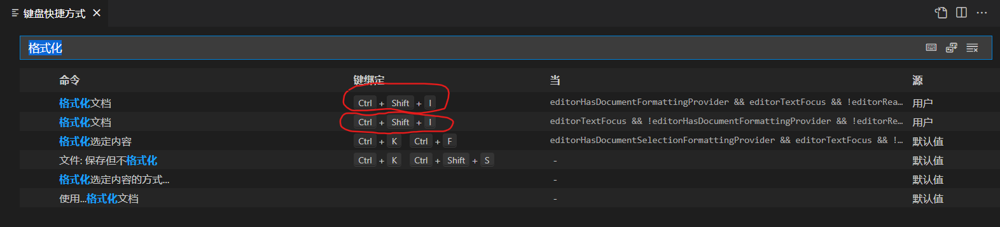

Astyle单个和批量文件格式化
最后更新于 2022年41月14日安装Astyle
首先，在命令行里面
sudo apt install astyle
然后安装vscode扩展Astyle
注意是这个扩展，不要安装别的，接下来配置快捷键（红圈），我比较喜欢ctrl+shift+i不过你也可以配置成别的

配置Astyle
然后打开settings.json，注意是整个的不是工作区的，在后面加上你的配置。我比较喜欢OIer最常用的kr（Kernighan&Ritchie）风格代码，配置如下。你也可以直接复制这个json，如果你要自定义风格，只需注释我的--style并且选择你自己的
"astyle.additional_languages": [
"c",
"cpp",
"*.h",
],
"astyle.cmd_options": [
// 预定义风格
// "--style=ansi", //ANSI 风格格式和缩进
// "--style=kr", //Kernighan&Ritchie 风格格式和缩进
// "--style=linux", //Linux 风格格式和缩进
// "--style=gnu", //GNU 风格格式和缩进
"--style=java", //Java 风格格式和缩进
"--indent=spaces=4", //缩进4个空格
"--indent-preproc-block",
"--pad-oper", //操作符两端插入一个空格
"--pad-header",
"--unpad-paren",
"--suffix=none",
"--align-pointer=name",
"--lineend=linux",
"--convert-tabs", //TAB转换为空格
"--verbose",
"--delete-empty-lines", //删除多余空行
// "--pad-paren-in", //括号内部加入空格
"--unpad-paren", //移除括号两端多余空格
],
// "astyle.executable": "D:\\AStyle\\bin\\AStyle.exe",
"astyle.java.enable": true,
"astyle.objective-c.enable": true,
批量Astyle
安装扩展Format files，注意是这个
然后在资源管理器里面右键点击你想格式化的文件夹，选择start format files: this folder，然后选择Do it!
耐心等待格式化完成，完成后整个文件夹的都格式化了